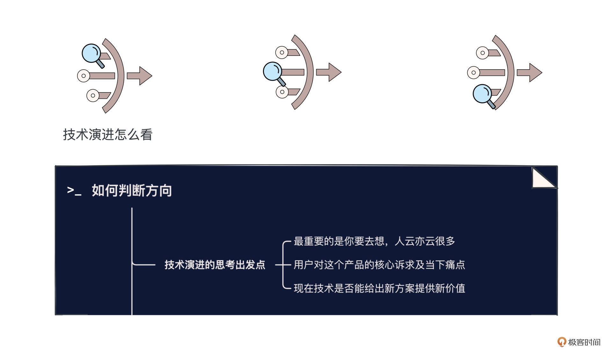
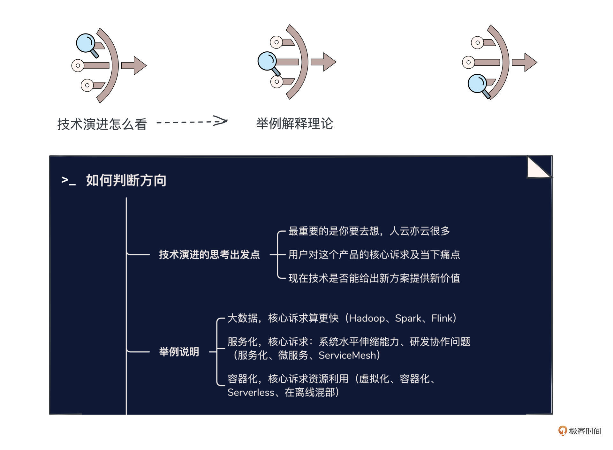
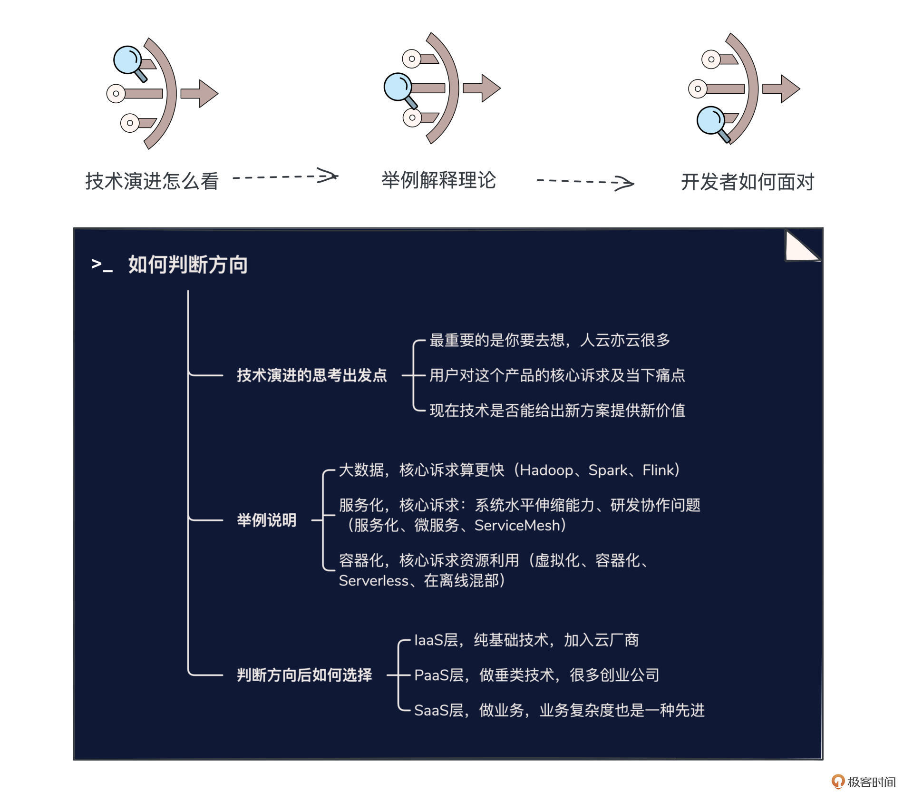

- 01 小厂项目：做程序员不难，难的是做职业程序员.md.html
- 02 小厂创业：做出一个产品，卖给所有人.md.html
- 03 淘宝HSF：能让淘宝出重大故障的就那批人.md.html
- 04 淘宝消防队：真正最优秀的程序员不应该是英雄.md.html
- 05 HBase_T4：Leader最重要的，说白了是要赌未来.md.html
- 06 异地多活：技术圈子的人，见过猪跑很重要.md.html
- 07 运维团队：我能干，只是我不想干而已.md.html
- 08 基础团队：研发效能部门，解决不了研发效能问题.md.html
- 09 统一调度：只是问题非常多而已，摔出来就行了.md.html
- 10 出走大厂：离职？还是不离职？这是一个问题.md.html
- 11 CEO心得：大厂出来创业，最大问题是对钱没概念.md.html
- 团队：在人身上，你到底愿意花多大精力？.md.html
- 开篇词 这一次，我们来采访毕玄.md.html
- 成事：技术人最大的问题就是情怀化.md.html
- 文化：你所在的团队，有多少人敢讲真话？.md.html
- 方向：技术演进，到底该怎么思考未来？.md.html
- 架构：架构师只是个角色，不是个岗位.md.html
- 番外：一位险些没上得了大学的青年，如何开启计算机征程.md.html
- 捐赠
方向：技术演进，到底该怎么思考未来？
你好，我是叶芊。- - 欢迎来到技术视野的研讨主题，相信你一定非常期待，毕竟在当年阿里技术牛人辈出的时候，毕玄都是公认的技术方向感非常好，做4个方向最少能命中3个的那种。- - 其实他自己也非常清楚这是他的个人优势，后来写离职复盘的时候他说：“我认为程序员的价值关键体现在作品上，作品里很重要的一点是对业务、技术趋势的判断，希望作为程序员的大伙，都能有机会打造一款世界级的作品，去为技术圈的发展做出贡献。”- - 那他到底是怎么培养技术敏锐度的？话不多说，我们开始今天的对谈。
- 极客时间：你对技术方向的判断力，经过了很多项目的检验，很多人公认你的方向感好。前面聊做决策的时候，你也提到Leader需要赌未来，带团队你也会团队成员讲清楚未来的方向和规划。这种判断力怎么形成的？或者说有没有什么？
毕玄：方法论？
极客时间：对，因为大家都喜欢，也都期待。
毕玄：但真的没有方法论。
极客时间：或者说技术敏感度？
毕玄：我们觉得真的很难培养。以前我们就想过怎么培养大家对一个事情的判断，但这是个走势问题，未来可难说了，谁也判断不了。我们后来总结最重要的可能是你要去想。
很多人其实从来没有想过未来的走向，就像技术，未来会走向什么？一般觉得什么最火就是了。比如说从SOA，到服务化、微服务，到Service Mesh，这是个历程，我们以前经常问很多人：你对这个历程怎么看？每个阶段到底有什么区别？
我问过很多人，自己也被问得很尬，因为回答不了。比如请问我们07年到09年做的服务化，跟现在讲的微服务到底区别在哪？没有人回答的出来，那说明这根本是个瞎扯的词，不就是概念嘛，为了卖个概念忽悠人。包括Service Mesh，很多人各有各的看法，我觉得是什么看法不重要，我们最怕的是没有看法的人，但是你追问他为什么好？如果回答因为很火，就简直是瞎扯。
极客时间：既然没有培养技术方向判断力的方法论，那别人说一个技术是颠覆，判断他瞎扯和不是瞎扯，你的方法是什么？
毕玄：关键依旧是那一点，你觉得这个新东西的价值到底是什么？相比以前带来了什么变化？
极客时间：新东西的价值怎么分析呢？每个新东西出来，看它技术演进背后的那个推动力是不是一致的？
毕玄：对，以前在中间件的时候大家聊过这个话题，纯粹的技术演进到底怎么思考未来，以史为鉴是最重要的，但每个都不一样。
极客时间：是每个公司不一样，还是说每个技术的推动力不一样？可以举个具体例子说下吗？
毕玄：跟公司关系不大，主要看这个技术怎么往前走。
我们经常举例大数据，因为大数据特别明显，从Hadoop，到Spark，到Flink，基本可以认为是三代。最关键的是你去看，为什么大数据会有这三代的演进？是因为它们都解决了用户对这玩意儿的核心诉求，如果这个诉求归拢到一起还是一样的，那就好办了。那用户对这几个大数据软件的核心诉求是什么？
最核心的诉求是算更快。做一个大数据分析，想越快拿到结果越好，这就是我们的诉求。
Hadoop解决了什么问题？Hadoop解决了0到1的问题，以前没有一个大数据的东西，Google发了一篇论文，然后Hadoop做了一个开源版的实现有了0到1，所以它一定会很成功。当然那个时候也不只有它，却是它成功了，这就有很多因素，比如说最重要的是大厂的支持，因为Hadoop是Facebook等等大力去推，这是不一样的。
所以Hadoop解决能算出来，但有点慢；Spark解决的是我通过架构改造，让你整个具备了算更快的能力；Flink就更快，因为已经实时化了。你看它的技术演进，其实就是围绕了怎么解决掉客户的痛点，然后通过技术层面的架构改造来完成这个事情，当然这其中也有技术下面的基础设施成熟化的背景。
包括中间件，回顾一下这些年中间件的发展，过去为什么会有几次迭代？几次迭代解决的都是什么问题？那我们认为肯定都是解决了一个痛点。
痛点是要挖出来的，你围绕那个痛点去想，技术现在有没有可能把这个痛点往前推进一代产生很大的改变，你的新东西要解得更好，而不是小修小补。如果有，那我认，那就是技术真正的变革，而不是造了个概念。
很多人觉得自己做的是新一代，我们就问相比上一代，用户在这一代里碰到的什么问题，你帮他彻底解掉了？
极客时间：第一步想清楚用户的问题是什么，第二步想具体怎么去解这个问题，解决方案感觉也很难想。
毕玄：技术演进本来就需要很多年，因为技术的下一代是很难想出来的，可能需要时机。数据库从关系到分布式走了多少年，理论上方向提了无数年，但直到现在才算是逐渐有了东西。现在数据库又在说要从OLTP、OLAP走向HTAP，这是更新一代，因为这也是用户的诉求，他们在不断往前推进。
以前很多团队总纠结要不要硬造一个概念说我们现在做的是新一代，但是如果不到时机，其实没关系，你就维护着，只是很多人觉得维护没有什么价值。但你们造概念，公司更不会认，外面有可能被你忽悠。
极客时间：但很多公司都会强调，技术人员要具备一定的影响力。
毕玄：千万不要为了做影响力而做影响力。反正在我的评判里，这种我是绝对不会认的。我先只看你对公司业务的影响，然后如果你的方案确实在这个技术领域具备领先性，我才认为你有影响力。
因为影响力是很容易培养的，你有了结果，也有贡献，做的方法也具备引领性，说实话，剩下的只要炒作包装一下就可以，如果你的公司影响力足够大，你想成为什么都可以，但前提都是你自己得有足够的实力，等你做到了，影响力什么的都是很自然的过程。

极客时间：怎么判断是彻底解了还是小修小补呢？既然每个技术背后的推动力不一样，我们再看几个技术。比如说服务化、微服务，这个核心诉求到底是什么？开始阿里做服务化是为了去解什么问题？
毕玄：以前做服务化，核心要解的问题有两个。
第一，要解决系统的水平伸缩能力的问题，因为服务化了以后，说白了你的每个应用，每个系统，要承担的责任变少了，所以伸缩性就能变得很强。
第二个服务化的核心问题其实是研发协作的问题。以前100人开发一个系统，大家都没有分工的，我接了一个需求，要改哪我就从头到尾全改，这个时候有可能会出现冲突，因为可能每个人都在改同一个地方，大家合并代码的时候就非常痛苦，效率很低。
服务化有分工了，你就改这块儿，他就改那块儿，当然这也增加了协作成本，但是它毕竟能让100人甚至上千人的研发团队可以并行做下去，这一点也跟AWS说的Modern Application有关，现代软件变得更复杂了，做任何软件上来就是一帮人，你必须考虑到一帮人协作的问题。
极客时间：“协作”这一点感觉比较少讲。
毕玄：我们当年其实也没有想到是用来解这个问题的。这是Jeff Dean在斯坦福讲Google技术演进的时候说的，Google做服务化的核心是为了具备千人以上的研发协作能力，这看问题的角度就比我们强太多。
当时我们主要想的前一个，而且我们还是被逼的，因为不做服务化，就加不了机器，业务就崩盘了。
虽然当时100多人研发同一个系统已经很痛苦了，但是我们没有想到服务化其实是用来解协作的，是做完才发现解掉了，后来看到Google说自己做服务化的核心目标是协作，我们觉得哇你讲得有道理，我们也加上了这一句（笑）。
你看，服务化当年最重要是为了解这些问题，那微服务，请问跟服务化相比到底解了什么问题？
服务化现在留下的核心问题是粒度，一个服务的粒度是主观的，架构想切成多大粒度就多大粒度，但这是有问题的；还有服务里面，比如说一个应用背后依赖了100个服务，到底哪些服务是核心路径是必须依赖的？现在都是靠人来控制的。
除非你说服务化的新一代可以解决这两个问题，那才是革命性的。但现在做不到，说什么微服务，他们就编吧，可能觉得服务化这么多年没发展也不大好，总得编个新的。
极客时间：微服务这个概念刚出来的时候不是很好理解，之前有人开玩笑解释为什么要做微服务，一般就是因为公司人有点冗余了。
毕玄：所以以前很多小公司问要不要做，我们都说你做个啥，一个系统多爽，开发效率最高，分布式会带来很多问题，包括对研发能力都是巨大的挑战。只是看起来技术不值得吹，觉得技术很烂什么的，当然这不重要，对业务来讲这都不重要。有些人就会这样，想挑战技术难度，觉得这种才叫复杂度，其实不是。
极客时间：但这种对技术难度的认知在技术团队里应该很普遍？
毕玄：很正常，因为技术的人都是有梦想的，梦想用一个很先进的技术去做一件事情。
但关键是在现今阶段，对公司来讲没有任何意义，所有公司不是不关注技术创新，只是出发点都是我到底面临什么问题。所以，这个问题除非你有一个创新的解法，可以比以前解得更好，那可以的，不能说你纯粹在外面看到一个很创新的玩意儿，一定要在公司用上，这就像拿着锤子找钉子。
而且很多人想用新语言、新框架，因为理论上来讲，这对他的职业路径可能更友好，否则他出去不好找工作。
极客时间：前面聊了大数据、服务化，现在最火的是云原生，这个技术方向我们也聊一聊，你觉得技术演进到云，本质是因为什么？云的下一步是什么？
毕玄：CloudNative其实是个分布式，无非是原来搭建分布式的方法，现在变成基于云去搭建，这是颠覆我是认的，像新公司不需要投人了，都是云帮你搞定。之前从单体到分布式的架构是个必然，但现在分布式再走向哪里就说不清楚。
极客时间：容器呢？这个技术演进背后的推动力是什么？
毕玄：从虚拟化到容器化是革命性进步，这解决了什么问题？虚拟化无非解的问题就是怎么让一台机器能跑更多东西，容器化解的是我会跑更多。
极客时间：所以全是资源的利用？
毕玄：对，所以我们认为，容器就是个运行单位，而这个运行单位不一定叫容器，可能有个更小的运行单位。所以阿里后来在做轻量级容器等等方向的探索，包括Serverless一定程度你可以认为就是一个更小粒度的运行单位，这叫未来，是一个技术趋势，其实它一直都在解同一个问题，只不过比前一代解得更好一点。
极客时间：Serverless这个新方向可以多说一点吗？对资源利用率这个问题，它彻底解决的点是什么？小厂完全不用买设备？
毕玄：肯定不用买了，而且Serverless是真正的只有用了才要付钱。
比如我的业务现在没有请求量就不用付费，请求量来了就只付那一点，但现在我们是按买的机器付钱，我可能现在根本没用，但还是要付钱。如果哪家云厂商敢说能按请求量付钱，那背后是不是Serverless我们都不在乎了，能这么牛的话，成本会省非常多，那所有都颠覆了。
极客时间：Serverless面临的核心难题是什么？
毕玄：主要是弹性的速度。比如Serverless我要拉起一个系统，这不是几秒就能拉得起来的，但对在线业务来讲，你不可能点一下几秒都出不来，大家能接受的都是几毫秒。所以Serverless都只是拿来做一些像计算这种后期的事情，以前可能是一些离线的事情，都是对响应时间可以忍受的。
Serverless也许是未来，但还比较长远，现在非常不成熟，只是个补充方案，就很尴尬。
极客时间：那一个技术，什么程度才算成熟？
毕玄：所有的技术如果想颠覆，必须进入核心业务。现在没有完全基于Serverless这种新理念来构造的在线业务的技术框架，因为在线业务对稳定性是至高要求，而且它完全不可预测。
尽管AWS推了无数年，一直希望能推进到一个全新的技术框架，阿里以前也想推，因为Serverless对云厂商来讲并不是坏事，如果真能做到，大家肯定都来用了，但很难，从技术上来讲目前真的做不到，这是最极致的弹性。
极客时间：在资源利用这个方向，除了Serverless，有别的方案吗？
毕玄：就是混部，现在混部到CPU层面了，大数据和在线其实都是CPU层面的，所以在离线的统一调度是这个阶段我们可以做的，能把利用率提高的一个很落地的方案。
极客时间：调度的难题是什么？
毕玄：之后最关键的是看GPU、FPGA这些能不能做好。
调度这个事，其实阿里最早很多高管都有这个梦想，博士成立阿里云的时候提出云的实际表现是统一存储和统一调度，他认为云的核心是可以把所有的机器像一台机器用，这就是统一调度。这个思想最早提出的应该是Google。
Google很早有篇文章叫《The Datacenter as a Computer》，一个数据中心像一台机器，这效率肯定是最高的，事实上现在也还做不到。Borg的思路是把CPU尽可能当一台机器用，但内存还不行，比如A机器现在空了1G，B机器有2G，但你不能说用户现在有3G可以用，这个真做不到，因为内存有时延的问题，在单机时延非常低，一旦跨了网络，但网络已经是光速了，这是物理决定的，就很难。
据说Google想探索这个方向，因为Google近两年把这篇文章改了一下，叫《The Datacenters as a computer》，这简直颠覆了我们的想象。
极客时间：Datacenters？跨地的那种？
毕玄：对，跨地数据中心像一台机器，我们连一个都没实现，你已经开始提下一个概念了，我们没法跟你玩。

极客时间：好，我们前面聊了如何分析技术演进的趋势，大概判断趋势之后，大家更关心的是在这波技术浪潮里自己能做什么。比方说现在所有人都知道云是趋势，有云了，基础设施会更集中在一批人手里。
毕玄：对，肯定是这样。
极客时间：那很多人在小厂，会担心自己之后的职业发展甚至岗位会受影响，怎么办？
毕玄：纯基础技术，像计算、存储、网络等等这种IaaS层面的，基本会收拢到几大云厂商手里，如果你要做这种技术，没有别的选择，加入这些厂商好了。
你看创业，很少有人说我要创业做IaaS、要做计算，不可能的，这是需要更大规模效应的生意，为什么小的云厂商越来越难，因为只有你服务器规模到了多少万台的时候，才可能实现盈利，前期投入真的太大了。
但在IaaS之上应该会诞生很多垂直的PaaS，也是做技术的，但这些反而不在大厂手上，全都在一些创业公司手上，这其实就是美国的现状。然后PaaS更上面是做业务的。所以看你自己想怎么走，去相应的公司就好了。真正喜欢做计算、存储、网络的同学其实很少的。
极客时间：很少是为什么？
毕玄：因为计算、存储、网络是个非常非常专业的领域，都是做虚拟化、计算资源这些东西，多数人根本就没有触及到这个领域，做的最多是PaaS，比如中间件、框架这些，而且未来外面会有好多家PaaS，空间是会越来越大的，不会越来越小。
极客时间：就现在的行业发展进度看，基础技术逐步商业化了，很多人创业做PaaS，包括阿里很多也都拿出来卖了，这个改变是行业的进步吗？对其它公司，对其他团队同学也可以参考？
毕玄：对团队同学的话，我觉得很难说。
极客时间：为什么，这样不是能更好地专注研究技术了吗？毕竟商业化了，团队的业务目标就是要不断追求自己产品的技术竞争力。
毕玄：我知道，但是对研发线的人来讲，很难说这是一件好事还是坏事。
好事确实是你做的东西不仅仅这家公司用了，还被全社会更多公司用了，成就感肯定更强。
但在技术层面来讲，商业化之后，很难说大家会觉得我技术上有多大更进一步的空间，因为外部更多是复杂性，而不是纯粹的技术难度问题，是你要支持的业务类型越来越多了。
极客时间：不是说技术要更先进？
毕玄：复杂性也算一种先进，只是大家怎么看待而已。
很多人觉得我支撑更高的并发量，用了更低的成本，这才叫追求了技术，所以很多公司做晋升的时候，业务技术的人会觉得自己没法跟基础技术的人PK，大家都觉得基础技术在解基础问题，复杂度很高，我们后来说还是得区分一下，业务复杂度也是难度。
做业务技术的人，他不是没有技术难度，他的技术难度在业务复杂度，能不能抽象成一个非常简单的东西，去支撑非常复杂的业务。就像阿里，阿里的营销够复杂了吧，每年双十一被吐槽最多的就是营销，但你想，写营销系统代码的人是不是更痛苦？做这套系统的人，他能不能做一个很好的抽象去支撑这么复杂的营销玩法，这也不是一般人做得到的，这也叫技术难度。
技术难度，不能光定义成纯技术侧的东西，其实还有很多是复杂性问题、抽象问题。当然每个技术人爱好不一样，有些会觉得我不喜欢面对这种，他喜欢解决技术问题，而业务是抽象，抽象是很复杂的东西。

水友讨论区
好，到这里今天关于技术演进方向的主题讨论就结束了。其实说实话，在和毕玄聊之前，我非常期待能不能收获一个类似灵丹妙药的方法论，虽然都说没有银弹，但人嘛总是会有幻想，今天聊完，失望多少有一点，但惊喜也意外很大。
失望是因为他说对一个事情走势的判断，最重要的可能是你要去想。这句话非常正确，但是完全没有用。
但意外惊喜是在追问的过程中，他也举例详细分享了自己的思路：所有的技术演进，其实都是围绕着用户对这个产品的核心诉求展开的，通过技术层面的架构改造，来解决用户当下的痛点。这个痛点，是你要挖出来的，你去想现在技术有没有可能把这个痛点往前推进一代，给用户提供新价值，这样才能产生很大的改变。
这个出发点很朴素但也很值得参考，你可以借鉴他的思路，找一个领域的技术演进过程分析一下，看看是否对自己有启发。
欢迎在评论区留言，也欢迎分享你自己的技术方向分析思路。下一讲我们会聊一聊带团队成事的话题，下一讲见。
拓展阅读
1. 毕玄之前就喜欢搞预测，在年末写过几篇预测文（虽然很多后来被打脸），如果感兴趣可以围观：
来一起预测2019、预测下云、AI在2018将会发生什么变化、2017年“工程时代”即将翻篇，迎接”科技时代”、2014年预测行业变化对技术岗位的冲击、回顾2007，展望2008
2. 毕玄非常关注对方向的判断，关于IaaS、PaaS、SaaS和云写了几篇文章：
IT从业者都应关注的软件行业的变化、回顾过去看IaaS的Next、回顾过去看应用PaaS的Next、云计算是新瓶装旧酒吗
3. 关于服务化毕玄之前也写过几篇文章，你可以从中看出他想法的变化：
2015年服务化，你真的需要吗、2017年大部分公司并不需要微服务、2019年Serverless：云时代的软件架构核心思想、服务化的过去、现在和未来、2022年应用架构演进到头了吗？
© 2019 - 2023 Liangliang Lee. Powered by gin and hexo-theme-book.